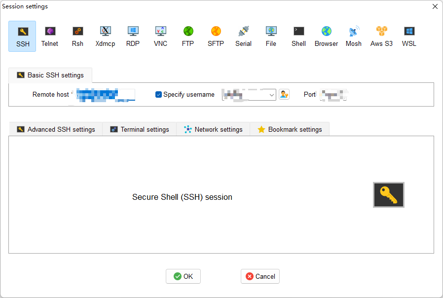

Section1.5: SSH
SSH command
Linux 一般作为服务器使用，而服务器一般放在机房，你不可能在机房操作你的 Linux 服务器。
这时我们就需要远程登录到Linux服务器来管理维护系统。
Linux 系统中是通过 ssh 服务实现的远程登录功能，默认 ssh 服务端口号为 22。
使用ssh连接远程服务器
ssh [OPTIONS] [-p PORT] [USER@]HOSTNAME [COMMAND]
# 例如
ssh nvidia@192.168.137.15 -p 22
VSCode Remote (SSH & WSL)

MobaXterm

CLion
具体参考资料《你奶奶都能学会的CLion汉化与远程部署教程》